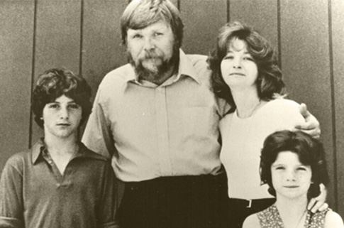

Ronald Defeo burst into
Harry's Bar screaming his parents had been shot.
Police discovered
the bodies of 6 members of the DeFeo family..
Father, mother,. and 4 of
the 5 Defeo children
were found, Face Down, executed in their beds.
Ronald claimed he wasn't home during the murders and only discovered the
bodies of his parents prior to arriving at Harry's Bar But after Police found
a gun box for a .35-Marlin Rifle in Ronald's Room, he subsequincially
confessed.
After a lengthy trial Ronald DeFeo Was found guilty of the
heinous murders.And was sentenced to 6 consecutive life sentences.
But
There's never been a solid explanation of how just this 1 person acting alone
could take the lives of these 6 people in an Upscale residential community and
the shots from an unsilenced 35-marlin rifle were never heard.
Why the victims showed no sign of struggle all found face down Toxicology
showed no signs of the family being drugged and forensics felt the bodies
were never moved.

The Lutz Family
On December 18, 1975, the Lutz family moved into the DeFeo home.
Though it had only been 13 months since the DeFeo murders had occurred,
George and Kathleen Lutz thought the Dutch colonial
was a lovely home and a steal at $80,000 Never expecting
they’d have to leave it all behind 28 days later.
A catholic priest arrived while the Lutz family was unpacking to bless the
family home. As the priest made his way upstairs to the second floor entering
the bedroom which had formerly belonged to Marc and John DeFeo, he began
sprinkling holy water at which point an unseen voice told the priest "Get out!"
Which he hastily did.
The Priest did not tell the Lutz family about the voice,
But he did warn them " Do not use it the upstair room as a bedroom, and not
do not let anyone sleep in there.” Although ominous, the Lutz family abided by
the words of the priest and turned the room into a sewing room.
From the very first night they moved in, the family claimed they felt strange
sensations. Within days the family's personality had drastically changed
arguments ensued.
George was plagued by a constant chill and spent all his
time feeding the fire place George also noticed a change in his grooming habits
and his and Kathy's health declined drastically.
The Lutz's daughter began spending all her time in her room playing with an
imaginary friend. She described as red eyed pig called Jodie, who could
transform not only shape but size at times being larger than the house.
Jodie also claimed she could not be seen by anyone unless she wanted them to..
Mysterious foul odors would emanate from different locations of the house.
Black stains appeared on the toilets and ceramic fixtures.
Kathy was touched by an unseen force and a
Green gelatin substance would appear throughout the house.
Hundreds of flies appeared in the sewing room despite it being the dead of
winter.
George would wake up nightly at 3:15 a.m. which coincided with the
time the police felt the Defoe’s were murdered George also awoke one night to
witness his wife transform into a 90‑year‑old hag and the next night she began
levitating off the bed. The Lutz family tried on numerous occasions to contacted
the Catholic priest Only to find the phones would cut out whenever they would
try to call.
After failing to get the priest to return, the family took
matters into their own hands. Armed with a crucifix, they walked throughout the
house reciting the Lord's Prayer. A chorus of voices erupted in response, asking
them, "Will you stop?"
The final night was reported to be the worst,
banging and wrappings as loud as a marching bands emanated throughout the house,
furniture being moved by its own accord, and the children being terrorized .
After 28 days in the DeFeo home, the family claimed they could take no
more.
They grabbed only a few belongings and fled the house, taking
shelter at Kathy Lutz's mother's home in nearby Babylon.
20 days after the Lutz's fled Paranormal Investigators Ed & Lorraine Warren were
called in by Marvin Scott a news reporter with channel 5 NY who had covered the
Amityville story and worked on a prior investigation with the Warrens.
A team of reporters, investigators, and parapsychologist’s were assembled by Ed
Warren and met at the home at 112 Ocean Avenue., the Lutz family refused to
re-enter the home during the investigation
During the investigation Ed was physically pushed to the floor while using some
religious provocation in the basement, Lorraine was also overwhelmed by the
sense of a Demonic presence and was plagued by her psychic impressions
of the Defeo Families bodies laid along the floor covered in white sheets, and a
sense of physically being pushed back
The research team also captured an image of spirit that appeared as a little
boy peering from the second floor. The land was also found to be used by John
Ketchum . John Ketchum was a practicing black magician and had a cottage on the
land prior to the construct of the Dutch Colonial in 1924. John requested that
his remains be buried on that property and they remain there till this day
The Shinicock Indians also at one time had an enclosure on this land that was used to house the sick, and the mad, those in this enclosure were left to die.
The Warrens believed that the suffering there had left the property with a very negative energy and dark history. And that Such a negative history was a magnet for demonic spirits and the preternatural.
The Warrens believe these energies directly impacted the lives of both the Defoe’s and the Lutz's. The Warrens retrieved a handful of the Lutz's earthly possessions and deed for the property The Lutz's sold the rest of their belongings and relocated to California.
The Ocean Avenue home that was once purchased for $80K in 1975 by the Lutz family, sold for $950.000.00 in 2010, and is again on the market. There have been no further reports of activity from recent residents.